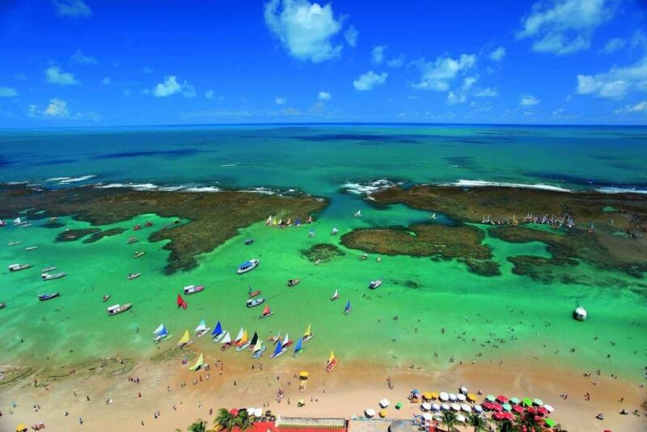

Frota
e
Roteiros
↓

🌴 Porto de Galinhas (PE)
Um dos destinos mais famosos do Brasil, Porto de Galinhas encanta com suas piscinas naturais de águas cristalinas e rica vida marinha. Ideal para relaxar, fazer passeios de jangada e aproveitar praias paradisíacas com excelente infraestrutura.